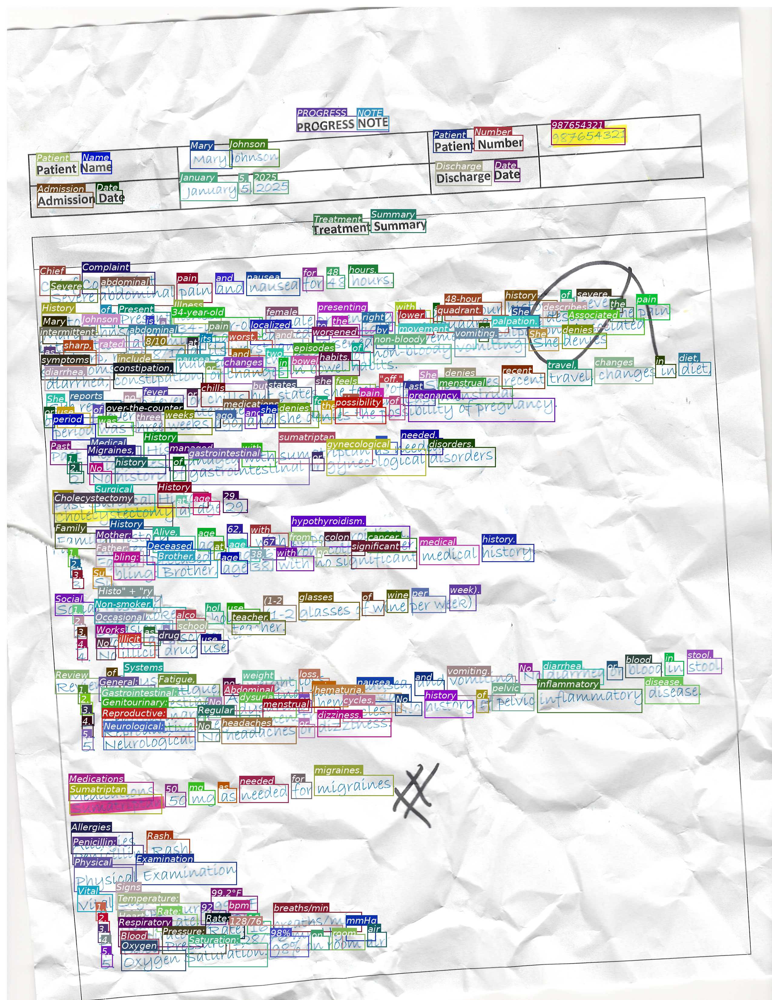
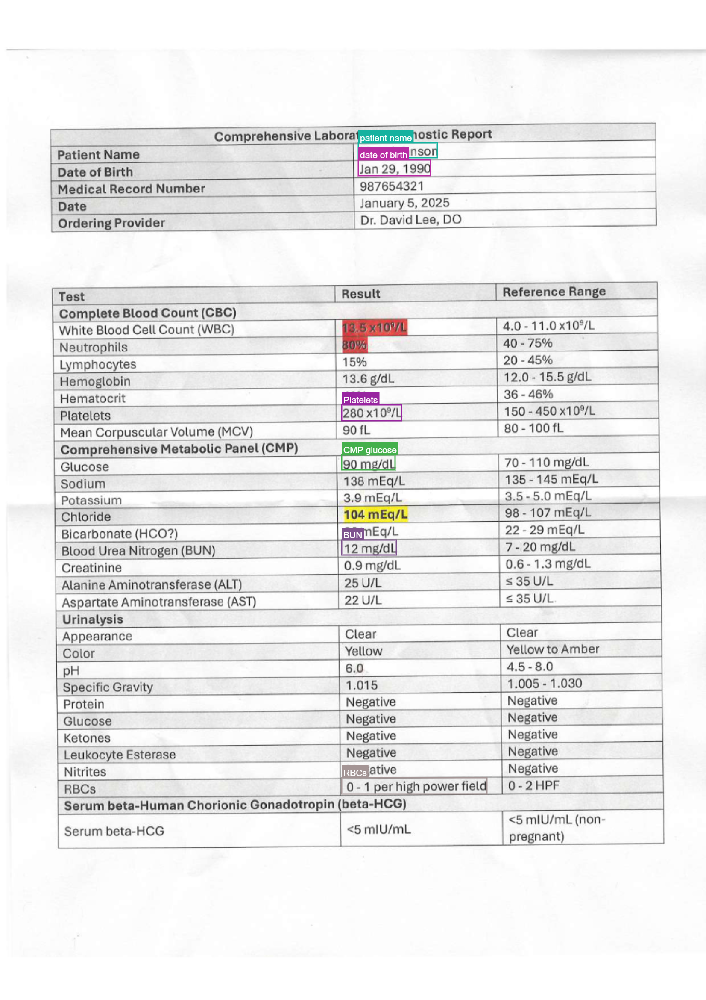

BBox Mode
output_mode="bbox" extends regular OCR with per-region bounding boxes. Each page yields a list of BBoxItem records — bbox=[x1, y1, x2, y2] in absolute pixels, a label, and the OCR text for that region.
Two workflows are supported, controlled by the user_prompt parameter:
| Workflow | user_prompt |
What the model returns |
|---|---|---|
| Full-text bbox | None / empty |
Every region on the page, one box per line / word / segment |
| Targeted extraction | Free-text instruction (e.g., "patient name and DOB") |
Only regions that match the instruction |
Model compatibility
Empirical results across tested VLM families:
| Model family | Full-text BBox | Targeted Extraction |
|---|---|---|
Qwen3.5/3.6 (e.g., Qwen/Qwen3.5-35B-A3B) |
✅ | ✅ |
Gemma 4 (e.g., google/Gemma-4-26B-A4B-it) |
⚠️ | ✅ |
GPT-4.1 (e.g., gpt-4.1, gpt-4.1-mini) |
❌ | ✅ |
Legend
- ✅ Works reliably out of the box.
- ⚠️ Works but may produce sparse or loosely-grouped boxes in full-text mode; targeted extraction is preferred.
- ❌ Does not reliably return bbox output in full-text mode; targeted extraction works.
!!! note These observations are from empirical testing on synthesized documents. Results vary with model version, document complexity, and prompt tuning.
Setup
from vlm4ocr import VLLMVLMEngine, OCREngine
# Qwen3-VL via vLLM (recommended for bbox)
vlm_engine = VLLMVLMEngine(model="Qwen/Qwen3.5-35B-A3B")
For other inference backends, see VLM Engines.
Full-text BBox OCR
Leave user_prompt empty (or omit it). The model transcribes the entire page and returns one bounding box per detected region.

Sequential
from vlm4ocr import VLLMVLMEngine, OCREngine
vlm_engine = VLLMVLMEngine(model="Qwen/Qwen3.5-35B-A3B")
ocr = OCREngine(vlm_engine=vlm_engine, output_mode="bbox")
ocr_results = ocr.sequential_ocr(image_path, verbose=True)
# Inspect results — pages are OCRPage dataclasses
for page in ocr_results[0].pages:
print(f"Page has {len(page.bboxes)} regions")
for item in page.bboxes:
print(f" [{item.label}] {item.bbox} → {item.text}")
Concurrent
import asyncio
from vlm4ocr import VLLMVLMEngine, OCREngine
vlm_engine = VLLMVLMEngine(model="Qwen/Qwen3.5-35B-A3B")
ocr = OCREngine(vlm_engine=vlm_engine, output_mode="bbox")
async def run_ocr():
async for result in ocr.concurrent_ocr(
[image_path_1, image_path_2, pdf_path],
concurrent_batch_size=4,
):
if result.status == "success":
for page_num, page in enumerate(result.pages):
annotated = page.plot_bboxes(show_label=False, show_text=True, color="random")
annotated.save(f"{result.filename}_page{page_num}_bbox.png")
asyncio.run(run_ocr())
Targeted Extraction
Pass a free-text instruction as user_prompt. The model returns only the regions matching the instruction — useful when you need specific fields from a structured document without processing the entire page.

Sequential
from vlm4ocr import VLLMVLMEngine, OCREngine
vlm_engine = VLLMVLMEngine(model="Qwen/Qwen3.5-35B-A3B")
ocr = OCREngine(
vlm_engine=vlm_engine,
output_mode="bbox",
user_prompt="Extract patient name and date of birth",
)
ocr_results = ocr.sequential_ocr(image_path)
for item in ocr_results[0].pages[0].bboxes:
print(item.label, "→", item.text)
Concurrent
import asyncio
from vlm4ocr import VLLMVLMEngine, OCREngine
vlm_engine = VLLMVLMEngine(model="Qwen/Qwen3.5-35B-A3B")
ocr = OCREngine(
vlm_engine=vlm_engine,
output_mode="bbox",
user_prompt="Extract patient name, MRN, and date of birth",
)
async def run_ocr():
async for result in ocr.concurrent_ocr(file_paths, concurrent_batch_size=4):
if result.status == "success":
for page in result.pages:
for item in page.bboxes:
print(f"{result.filename} {item.label}: {item.text}")
asyncio.run(run_ocr())
Visualizing results
OCRPage.plot_bboxes() re-opens the source file, applies any rotation/resize that was used during OCR, and draws the boxes on top. It returns a PIL.Image.Image you can display or save.
The recommended appearance depends on the workflow:
Full-text bbox — no label categories, so use random colors and show only the transcribed text:
for page_num, page in enumerate(ocr_results[0].pages):
annotated = page.plot_bboxes(show_label=False, show_text=True, color="random")
annotated.save(f"annotated_page{page_num}.png")
Targeted extraction — label categories are meaningful, so color by label and show both:
for page_num, page in enumerate(ocr_results[0].pages):
annotated = page.plot_bboxes(show_label=True, show_text=True, color="label")
annotated.save(f"annotated_page{page_num}.png")
When both show_label and show_text are True, each box gets a single tag that reads label; text (bold label, italic text).
Parameters
| Parameter | Type | Default | Description |
|---|---|---|---|
show_label |
bool |
True |
Draw the label (bold) in the tag above each box. |
show_text |
bool |
False |
Draw the OCR text (italic) in the tag above each box. |
color |
str |
"label" |
"label" = deterministic color per label; "random" = random color per box; any other string is a PIL color applied to all boxes (e.g. "red", "#E63946"). |
box_width |
int |
3 |
Outline thickness in pixels. |
font_size |
int |
20 |
Font size in pixels. |
font_path |
str \| None |
None |
Path to a .ttf font; falls back to system fonts. |
Lower-level plot_bbox
Call plot_bbox directly if you have your own image and BBoxItem list:
from PIL import Image
from vlm4ocr import plot_bbox, BBoxItem
image = Image.open("document.jpg")
bboxes = [BBoxItem(bbox=[100, 50, 300, 80], label="name", text="Mary Johnson")]
# Targeted-style rendering
annotated = plot_bbox(bboxes, image, show_label=True, show_text=True, color="label")
Per-VLM bbox formats
Different VLM families encode bbox output with different JSON key names, axis orders, and coordinate scales. vlm4ocr resolves the right format automatically by matching the model name against a registry. The built-in entries are:
| Pattern | coord_scale |
axis_order |
bbox_key |
|---|---|---|---|
qwen3 |
normalized_1000 |
x0y0x1y1 |
bbox_2d |
gemma-4 |
normalized_1000 |
y0x0y1x1 |
box_2d |
gemma-3 |
normalized_1000 |
y0x0y1x1 |
box_2d |
gpt-4.1 |
normalized_1000 |
x0y0x1y1 |
bbox |
If no pattern matches the model name, a default BBoxFormat() (auto scale, x0y0x1y1 order, bbox key) is used and a warning is logged.
Custom BBoxFormat
Override the auto-resolved format by passing a BBoxFormat instance to OCREngine:
from vlm4ocr import OCREngine, BBoxFormat
ocr = OCREngine(
vlm_engine=vlm_engine,
output_mode="bbox",
bbox_format=BBoxFormat(
coord_scale="normalized_1000", # "normalized_1000", "normalized_1", "auto", or "pixel"
axis_order="x0y0x1y1", # or "y0x0y1x1" for Gemma-style output
bbox_key="bbox_2d",
label_key="label",
text_key="text",
system_prompt_file="ocr_bbox_system_prompt_default.txt",
),
)
Registering a format for a new model family
Use register_bbox_format to add a new entry to the registry at runtime — useful when integrating a model family not yet covered:
from vlm4ocr import register_bbox_format, BBoxFormat
register_bbox_format(
"my-custom-vlm",
BBoxFormat(
coord_scale="normalized_1000",
axis_order="x0y0x1y1",
bbox_key="bounding_box",
label_key="category",
text_key="content",
),
)
# Now OCREngine will pick up this format for any model whose name contains "my-custom-vlm"
BBox items
Each element in page.bboxes is a BBoxItem dataclass:
from vlm4ocr import BBoxItem
item = page.bboxes[0]
item.bbox # [x1, y1, x2, y2] — absolute pixels in OCR-time image space
item.label # str — category assigned by the model (e.g., "patient name")
item.text # str — transcribed text for this region
Coordinates are in the pixel space of the image that was sent to the VLM (i.e., after any rotation and max_dimension_pixels resize). page.image_width and page.image_height reflect those dimensions.